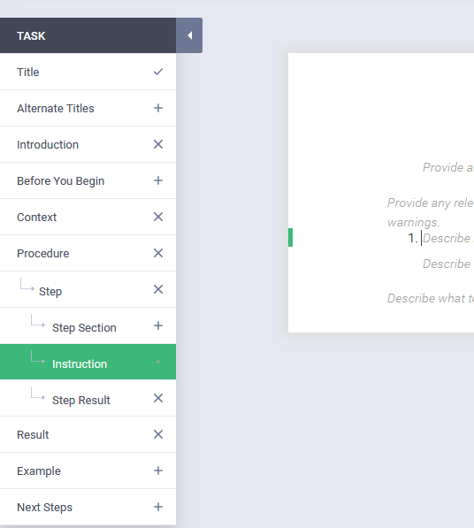

The Guidance panel along the left-hand side of the window guides
you through the content creation process.
Purpose
The Guidance panel shows you the parts of the topic that you might
already have or might want to add. It varies depending on the topic type. It guides you by
letting you see the parts that are required and optional for that topic type. More importantly,
it tells you the order in which those parts must appear. Authors must respect the order of the
parts, as they cannot be changed. This promotes consistency between topics.
Tip: Before you start writing, familiarize yourself with the parts of each topic type
to get familiar with the optional and required parts. You can plan your content better once you
know what the topics need to be complete. Only a few parts are required, like the title. If you like, you may remove
any parts you don't need, though leaving empty parts is perfectly fine.
Functionality
The
Guidance panel has functionality to further guide you in content
creation:
- Hover help: Each part has hover help that describes the part and tells you when you might
find it useful.
- Add or remove parts, depending on the icon:
- Plus: Optional part that you can add.
- X: Optional part that you are currently using but can removed. To be able to remove it, it
must have no content (text written in that part).
- *: A required part. For example, every step must have an instruction
part.
- Check mark: You have content in that part, either by default when you created a new topic
or because you typed it in.
- Tracking bars: Always know which part your cursor is in thanks to the
blue tracking bars, one in the authoring area and one in the guidance panel, indicating which
part you are in.
- Click on a part in a navigation panel, such as the sections that you
create, to navigate right to that part of your topic in the authoring area.
Figure 1. Guidance panel for a task topic
